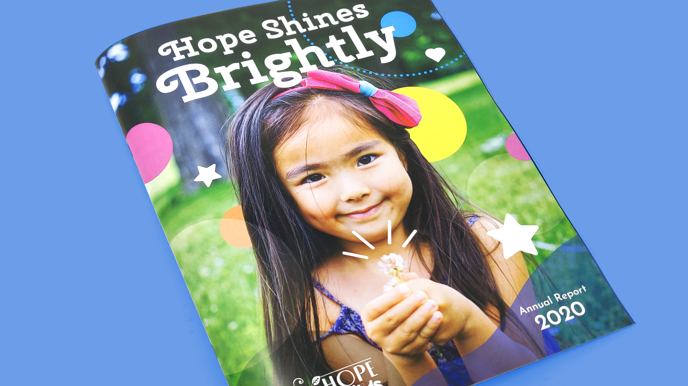

New Hope for Kids 2020 Annual Report
Challenge: New Hope for Kids is a non-profit organization with a mission to "support children and families grieving the death of a loved one and to grant wishes to children with life-threatening illnesses." Though New Hope for Kids deals with a heavy topic, the goal was to establish an uplifiting tone and leave readers with a sense of hope for the work they are doing.
Solution: Using inspiration from the appearance of sprinkles, I crafted the theme of the book to have bright, energetic photography that focuses on kids and the work of the volunteers, along with rounded shapes and pastel colors that accent the imagery. The final design is 20 pages, printed full color on 100 lb glossy paper.
Deliverables: Interactive PDF document, printed booklet

Client's Goals
- Tells a story
- Uses bold type and colors
- Emphasizes strong photography, less about text
- Makes the information interesting and easy to understand
Credits
Stock photos courtesy of:
- Gabriel Baranski from Unsplash
- Leo Rivas from Unsplash
- Leah Huyghe from Unsplash
Photos of the printed report were taken by me.
Icons from the Noun Project, courtesy of:
- iconixar
- icon4yu
- KP Arts
- Becris
- IOHK Design Department
- Stefan Parnarov